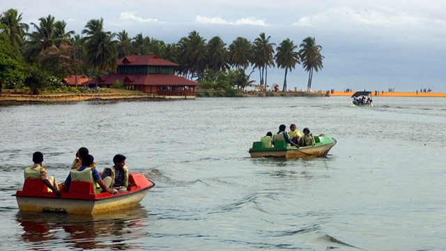

Shankhumugham Beach

Residents of the capital city of Thiruvananthapuram swear by the vibe and atmosphere at the Shankhumugham Beach. Some come here to view sunsets, while others drop by during the day to simply relax, with a majestic view and a calming breeze playing perfect hosts. Its rustic charm is enhanced by the fishermen thronging the place, along with a bunch of delightful vantage points which seem to have been specifically created for picnickers. For company, you have the matsyakanyaka sculpture (a gigantic, 35 m long mermaid structure), among the most unique constructions in the entire State and a special Indoor Recreation Centre and a beautiful Children’s Park.
How to Get Here
Nearest railway station: Thiruvananthapuram Central, about 7 km
Nearest airport: Trivandrum International Airport is a short drive away
Kuthiramalika Palace

122 smiling wooden horses await all who visit ‘Kuthiramalika’, which means “palace of horses”. Formally known as Kuthiramalika Palace Museum or Puthenmalika Palace Museum, it is a pristine two-storied palace near the Sree Padmanabhaswamy Temple in Thiruvananthapuram. Built by Swathi Thirunal Balarama Varma, who was Maharaja of the Kingdom of Travancore in British India, it takes one back to the 1840s when it was first constructed. It is a great example of the Kerala school of architecture and is made from teakwood, rosewood, marble, and granite. The museum houses idols and sculptures made from white marble, Kathakali figures, Belgian mirrors and paintings. The flourishing spice trade between Kerala and the world made it possible to obtain those items.
Barefoot walks are extremely famous here as well. It is a trip to another era hidden inside the capital of the State. The local guides give you a detailed idea of the many wonders hidden in the palace which will surely leave you enthralled.
How to Get Here
Nearest railway station: Thiruvananthapuram Central, about 1 km
Nearest airport: Trivandrum International Airport, about 6 km
Neyyar Wildlife Sanctuary

Around 32 km from Thiruvananthapuram, one comes across 12,000 hectares of natural vegetation in the form of the Neyyar Wildlife Sanctuary. It offers a rare chance to view flora and fauna alongside numerous trekking options. People love going up the 1868m high Agasthyamala Peak which is a famous picnic spot as well. The exotic view should not be missed at any cost as the fragile slopes and flat meadows make for an enchanting sight.
The Neyyar Dam nearby is also famous due to its many features, chief amongst them being a picturesque picnic spot for families, friends and solo-travellers alike. It boasts of a beautiful Watch Tower, a Deer Park, a Lion Safari Park and a Crocodile Rehabilitation and Research Centre as well. The Neyyar Wildlife Sanctuary of which the dam is a part is the habitat of over a hundred species of fauna including the Asian Elephant, tiger, leopard, Slender Loris and reptiles and amphibians like the King Cobra, Travancore Tortoise, etc. One can avail boating facilities at the reservoir which provides for a beautiful panoramic view of the area
How to Get Here
Nearest railway station: Thiruvananthapuram Central, about 32 km
Nearest airport: Trivandrum International Airport, about 38 km
Veli Tourist Village
The Veli Tourist Village which lies where the Veli Lake meets the Arabian Sea provides for unique boating and picnicking opportunities. Visitors can hire pedal boats or paddleboats as per their convenience. One can also roam the gardens and have a nice picnic or choose to employ the boats for the entire duration of the trip. The view and feel of the place is extremely unique, considering it is merely 12 kms from the capital city of Thiruvananthapuram. Children are known to have a lot of fun climbing the sculptures here and the speedboat ride across the waters. A separate Children’s Park and Floating Cafe run by Kerala Tourism Development Corporation (KTDC) are added incentives to visit this unique village.
How to Get Here
Nearest railway station: Thiruvananthapuram Central, about 8 km
Nearest airport: Trivandrum International Airport, about 3 km
Varkala Beach
Varkala, a calm and quiet hamlet, lies on the outskirts of Thiruvananthapuram district. It has several tourist attractions that include a beautiful beach, a 2000-year-old Vishnu Temple and the Ashramam - Sivagiri Mutt a little distance from the beach. The Papanasam Beach (also called as Varkala Beach), which is ten kilometers away from Varkala, is renowned for a natural spring. Which is considered to have medicinal and curative properties. A dip in the holy waters at this beach is believed to purge the body of impurities and the soul of all sins; hence the name 'Papanasam Beach'.
A two thousand-year-old shrine the Janardhanaswamy Temple stands on the cliffs overlooking the beach, a short distance away. The Sivagiri Mutt, founded by the great religious reformer and philosopher Sree Narayana Guru (1856 - 1928) is also close by. The Samadhi (the final resting place) of the Guru here attracts thousands of devotees every year during the Sivagiri Pilgrimage days - 30th December to 1st January. Sree Narayana Guru propagated the ideology: "one caste, one religion and one God", in a society torn by the taboos of caste system
How to Get Here
Nearest railway station: Varkala, about 3 km away
Nearest airport: Trivandrum International Airport, about 57 km away